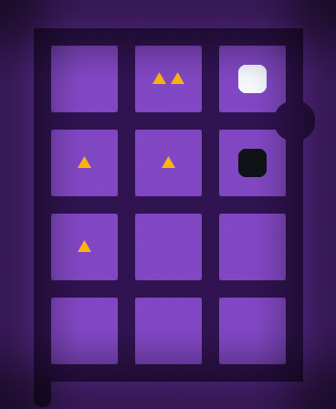
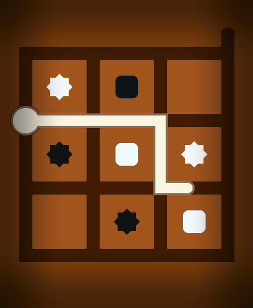
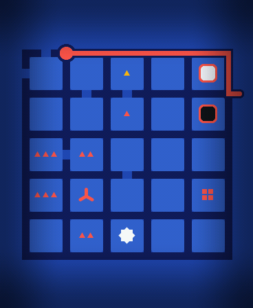

Circle with a Line on ESP32
The Witness is one of my favorite games of all time, and I have been obsessed with its puzzles ever since playing it. Inspired by this post from Steve Ruiz, I vibe coded a standalone line-drawing puzzle game for a pocket-sized Waveshare ESP32-S3 1.8" AMOLED touch board, written in plain C. The code is at github.com/steren/circle-with-a-line-esp32.
Everything in the repository (the procedural puzzle generator, the vector graphics, and the synthesized audio) has been prompted from scratch with no external game libraries.
There is something genuinely incredible about holding a piece of hardware that boots straight into your app instantly and is dedicated to just one thing. No long OS boot sequence, no launcher: just a single-purpose puzzle object in your hand, all for $30 and a few tokens.
The game
The entire screen is the panel: no menus, counters, or text chrome. Each level glows in one of six saturated color themes (teal, cobalt, violet, bronze, moss, raspberry) softly vignetted toward the edges, like a backlit acrylic panel. Drag a line from the circle along the channels to the exit, and let the board tell you when you got it right.


There are 50 levels across 7 chapters, scaling from 2×2 grids up to 5×5, and vertical ones that perfectly fit the screen aspect ratio. True to The Witness, each chapter introduces a new rule gently on small boards before combining it with earlier ones, with no tutorial text so you discover how everything works by playing.

How it works
I have no idea, but here's what my agent says:
The firmware is written in plain C on ESP-IDF and FreeRTOS, with no external game, graphics, or audio libraries. It renders directly into an RGB565 framebuffer in PSRAM and flushes it over QSPI to the AMOLED display, reads capacitive touch and side buttons over I2C, streams sound over I2S to the onboard audio codec, and saves progress in flash.
Puzzles are generated on the fly rather than hard-coded: the generator traces a random valid path, derives clues from it, and strips them back while a solver verifies the solution stays unique. On the ESP32-S3, a background task on the second CPU core keeps fresh puzzles ready ahead of you, falling back on a pre-computed bank of 2,000 puzzles if you jump straight into one of the slower 5×5 boards.
All sound effects are synthesized in real time at 16 kHz for the tiny onboard speaker, the game core compiles natively on a PC for automated testing and rendering, and at boot the firmware probes the touch controller over I2C to detect Waveshare's V1 vs. V2 hardware revision automatically.
Try it
I really recommend tinkering with these tiny ESP32 display boards, they are inexpensive and surprisingly fun to build for. Order a Waveshare ESP32-S3 1.8" AMOLED board, and if you have one on your desk, clone circle-with-a-line-esp32 and flash the game with make game-flash.